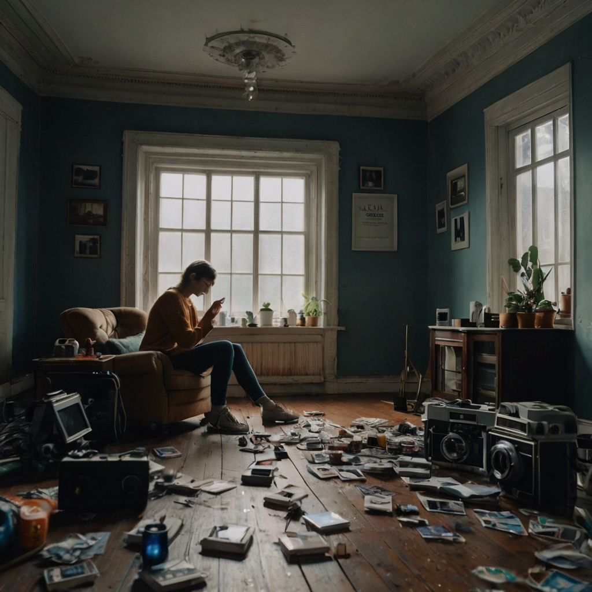

How to Save Yourself from Social Media Addiction
Why Social Media Detox?
Social media can be fun, but too much can hurt your focus, mood, and real-life relationships. A detox helps you regain control.
Signs of Social Media Addiction
- Checking your phone first thing in the morning and last at night.
- Feeling anxious when you can’t check notifications.
- Comparing yourself to others online.
- Spending hours scrolling without realizing it.

Detox Tips & Habits
- Set daily time limits for each app.
- Turn off non-essential notifications.
- Replace scrolling with a positive habit (reading, walking, etc.).
- Have “phone-free” times (meals, before bed, etc.).
Action Steps to Level Up
- Track your screen time for a week.
- Unfollow accounts that make you feel bad.
- Try a 24-hour social media fast.
- Use Covel to build a “no social media after 9pm” habit.